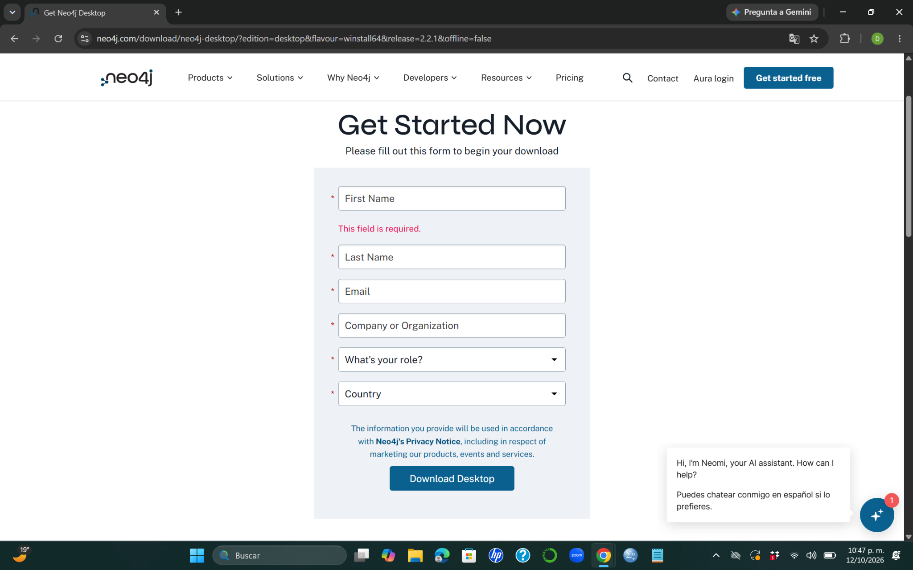
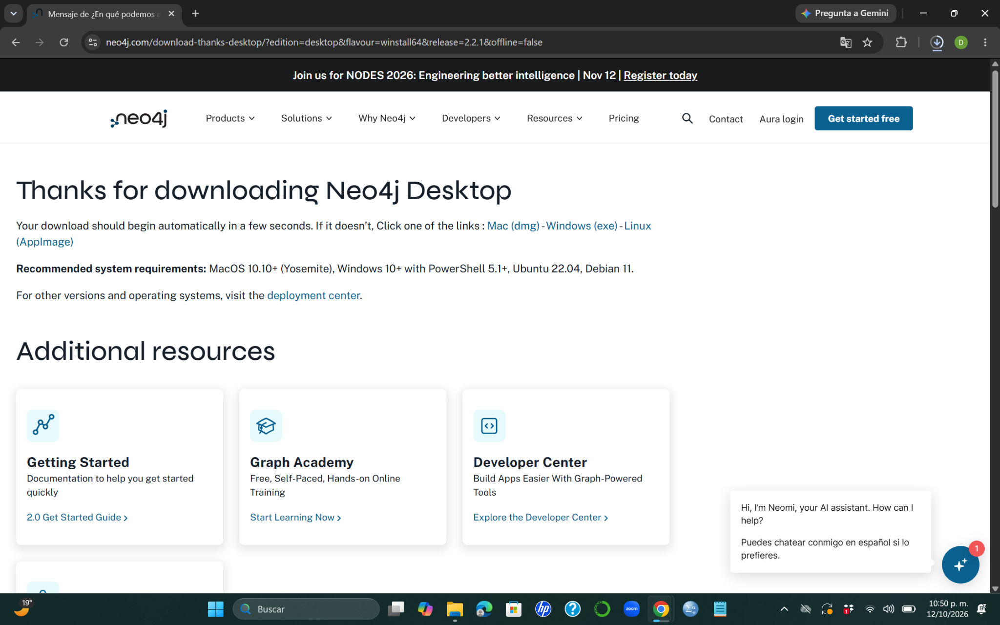
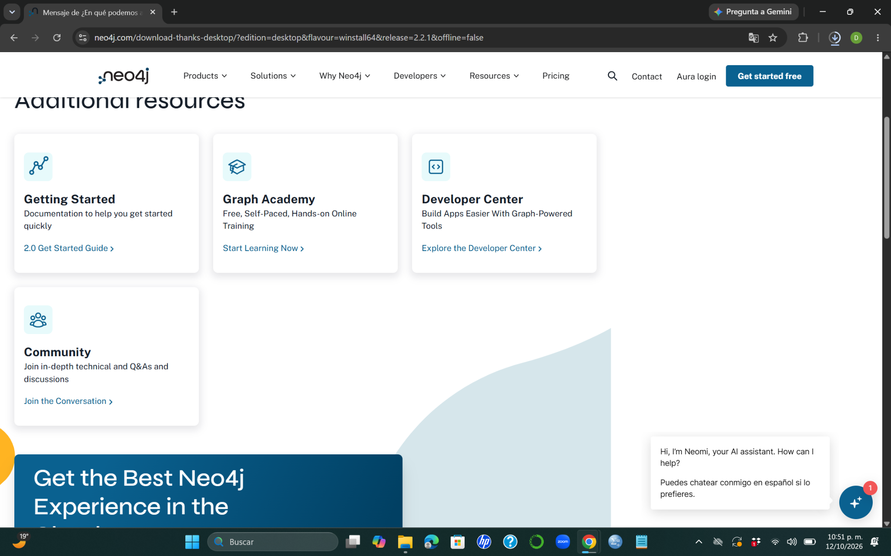
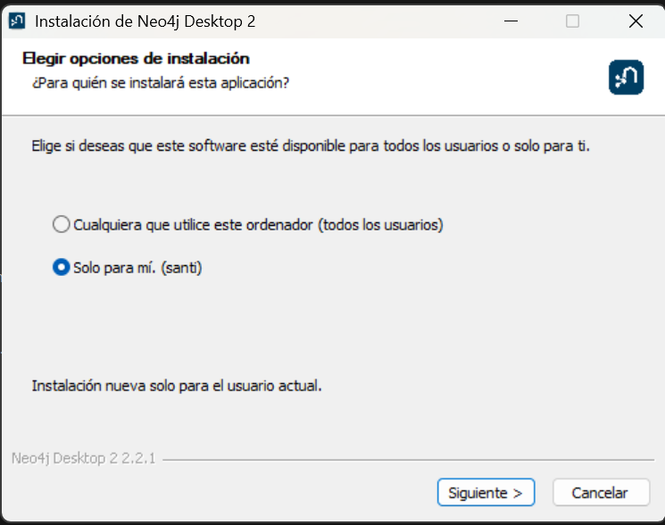
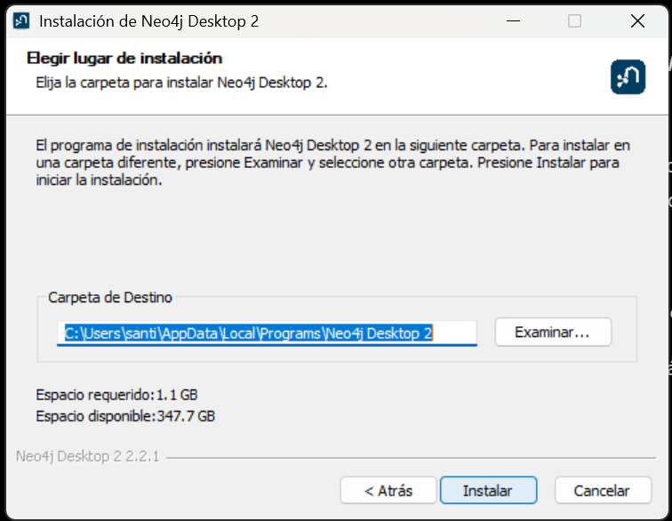
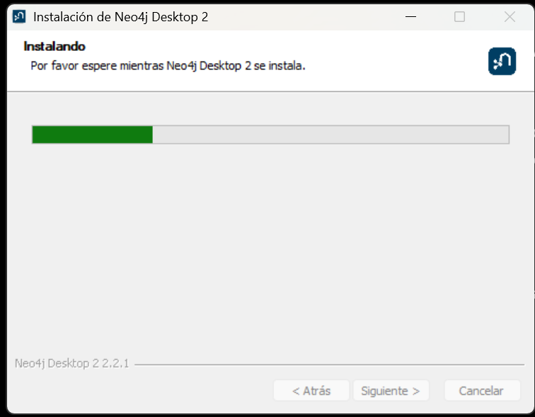
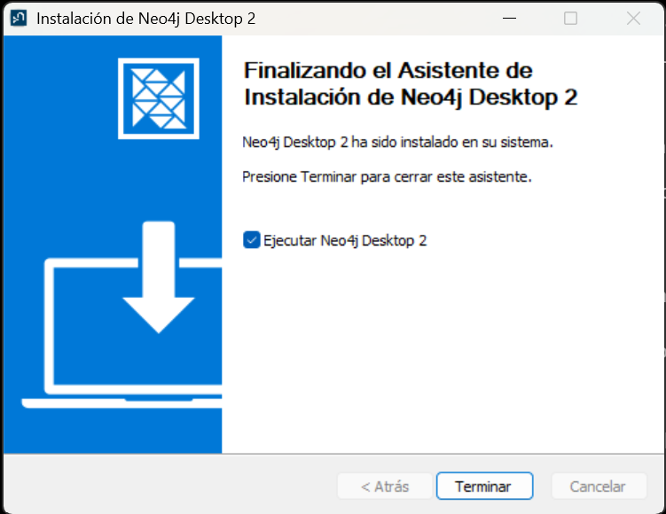
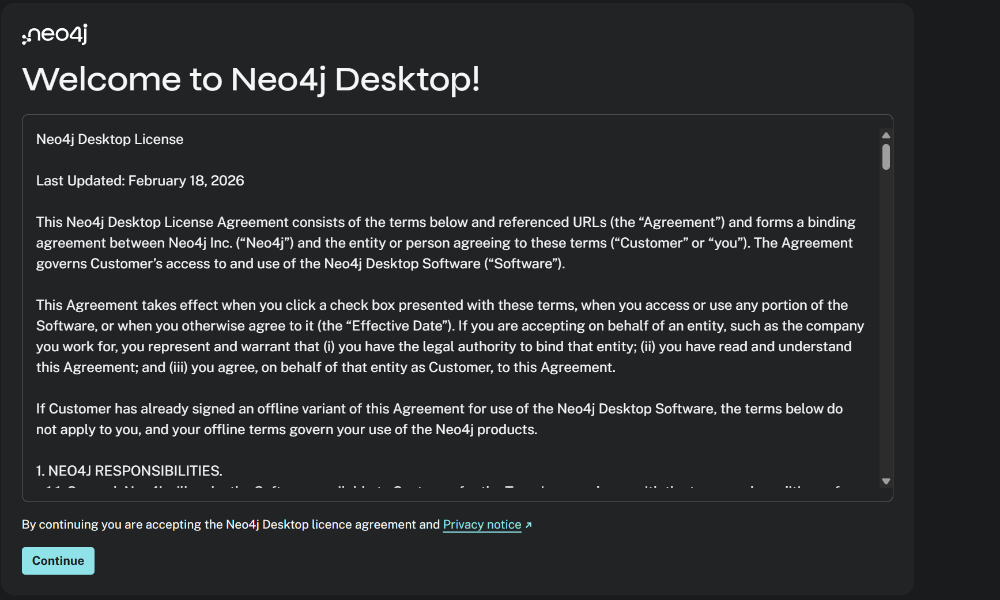
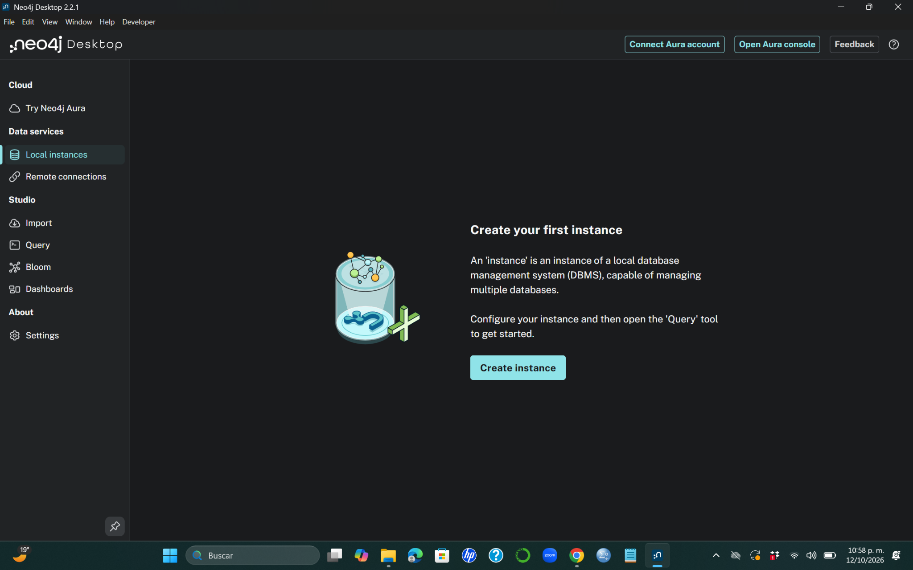

Instalación de Neo4j Desktop en Windows
1 Introducción
Neo4j es un sistema gestor de bases de datos orientado a grafos que permite representar información mediante nodos, relaciones y propiedades.
A diferencia de otros modelos de bases de datos, Neo4j facilita la representación y consulta de conexiones entre diferentes entidades, como personas, productos, organizaciones o redes de transporte.
Para trabajar con este sistema utilizaremos Neo4j Desktop, una aplicación que permite administrar instancias locales de Neo4j y realizar consultas mediante el lenguaje Cypher.
En este manual se explica el proceso de descarga e instalación de Neo4j Desktop en Windows.
Al finalizar, tendremos la aplicación instalada y preparada para crear nuestra primera instancia local.
2 Requisitos previos
Antes de comenzar, es necesario contar con:
- Una computadora con Windows 10 u 11.
- Conexión a Internet para descargar el instalador.
- Espacio disponible en disco.
- Permisos para instalar aplicaciones.
En el procedimiento documentado se utilizó Neo4j Desktop 2.2.1 en Windows 11.
Las pantallas pueden presentar pequeñas diferencias dependiendo de la versión de Neo4j Desktop y del sistema operativo.
El procedimiento general de instalación es similar.
3 Descargar Neo4j Desktop
Primero debemos acceder al sitio oficial de Neo4j:
https://neo4j.com/download/
En la página de descargas buscamos la opción correspondiente a Neo4j Desktop para Windows.
Al seleccionar la descarga, aparecerá un formulario solicitando algunos datos.

Como se muestra en la Figure 1, el formulario solicita:
- Nombre.
- Apellidos.
- Correo electrónico.
- Institución u organización.
- Rol o actividad.
- País.
Completa los campos solicitados y selecciona Download Desktop.
3.1 Confirmar la descarga
Después de enviar el formulario, aparecerá una página de confirmación.

En la Figure 2 podemos observar el mensaje de agradecimiento por descargar Neo4j Desktop.
Generalmente, la descarga comienza automáticamente.
Si esto no sucede, podemos utilizar el enlace Windows (exe) que aparece en la página.
También se muestran algunos recursos adicionales para conocer Neo4j.

Estos materiales incluyen documentación, cursos y recursos para desarrolladores.
No es necesario utilizarlos para completar la instalación.
4 Ejecutar el instalador
Cuando termine la descarga, abrimos la carpeta Descargas de Windows.
Localizamos el instalador de Neo4j Desktop y hacemos doble clic para ejecutarlo.
Si Windows solicita autorización para realizar cambios en el equipo, verificamos que se trate del instalador descargado desde el sitio oficial y confirmamos la operación.
Después aparecerá el asistente de instalación.
5 Seleccionar el tipo de instalación
El instalador permite elegir para quién estará disponible la aplicación.

Como se observa en la Figure 4, existen dos posibilidades:
- Todos los usuarios: la aplicación estará disponible para las cuentas del equipo.
- Solo para mí: la aplicación se instalará para el usuario actual.
Para esta práctica seleccionamos Solo para mí.
Esta opción es suficiente cuando trabajamos en una computadora personal.
Posteriormente hacemos clic en Siguiente.
6 Seleccionar la carpeta de instalación
El asistente solicitará indicar la ubicación donde se instalará Neo4j Desktop.

En la Figure 5 se muestra la carpeta predeterminada propuesta por Windows.
No es necesario modificar esta ubicación.
En el procedimiento documentado, el instalador indicó un espacio requerido de aproximadamente 1.1 GB.
Para continuar, hacemos clic en Instalar.
7 Proceso de instalación
Después de seleccionar la carpeta de destino, comenzará la instalación.

Durante este procedimiento, el asistente muestra una barra de progreso, como se observa en la Figure 6.
Debemos esperar hasta que termine.
El tiempo necesario dependerá de las características del equipo.
No es necesario ejecutar comandos ni realizar configuraciones adicionales durante esta etapa.
8 Finalizar la instalación
Cuando el instalador termine, aparecerá una pantalla indicando que Neo4j Desktop se instaló correctamente.

En la Figure 7 aparece la opción:
Ejecutar Neo4j Desktop 2
Dejamos marcada esta casilla para abrir la aplicación automáticamente.
Finalmente, hacemos clic en Terminar.
9 Primera ejecución de Neo4j Desktop
La primera vez que abrimos Neo4j Desktop, aparece una pantalla de bienvenida con el acuerdo de licencia.

En esta pantalla podemos revisar las condiciones de uso de la aplicación.
Si estamos de acuerdo con los términos y el aviso de privacidad, hacemos clic en Continue.
Después de continuar, Neo4j Desktop abrirá su pantalla principal.
10 Pantalla principal de Neo4j Desktop
Una vez completada la configuración inicial, podremos acceder a la interfaz de Neo4j Desktop.

Como se observa en la Figure 9, la aplicación presenta diferentes opciones en el menú lateral.
Entre las principales encontramos:
| Opción | Descripción |
|---|---|
| Local instances | Permite crear y administrar instancias locales de Neo4j. |
| Remote connections | Permite configurar conexiones a instancias remotas. |
| Import | Herramienta para importar datos. |
| Query | Entorno para escribir y ejecutar consultas. |
| Bloom | Herramienta para explorar visualmente grafos. |
| Dashboards | Permite trabajar con paneles de visualización. |
| Settings | Configuración de la aplicación. |
10.1 ¿Qué es una instancia local?
Una instancia local es una instalación del sistema gestor Neo4j que se ejecuta en nuestra propia computadora.
Una instancia puede administrar bases de datos, permitiendo almacenar nodos, relaciones y propiedades.
En la pantalla principal aparece el botón:
Create instance
Este botón permite comenzar el proceso de creación de una instancia local.
La instancia corresponde al sistema gestor Neo4j que se ejecuta en la computadora.
La base de datos es el espacio lógico donde almacenamos y consultamos nuestros grafos.
Una instancia puede administrar una o varias bases de datos, dependiendo de la edición y configuración utilizada.
11 Comprobación de la instalación
Para confirmar que Neo4j Desktop se instaló correctamente, verificamos que:
- La aplicación pueda abrirse desde Windows.
- Se muestre la pantalla principal.
- Aparezca la sección Local instances.
- Esté disponible la opción Create instance.
Si podemos acceder a estas opciones, la instalación de Neo4j Desktop se ha completado correctamente.
Esto confirma que la aplicación está instalada, aunque todavía falta crear y poner en funcionamiento una instancia local de Neo4j.
12 Conclusión
En este manual realizamos el proceso de descarga e instalación de Neo4j Desktop en Windows.
Comenzamos accediendo al sitio oficial de Neo4j, descargamos el instalador, seleccionamos las opciones de instalación y completamos la configuración inicial.
Finalmente, identificamos la pantalla principal de la aplicación y algunas de sus herramientas.
Con Neo4j Desktop instalado, contamos con el entorno necesario para continuar con la creación de una instancia local y comenzar a trabajar con bases de datos orientadas a grafos mediante el lenguaje Cypher.